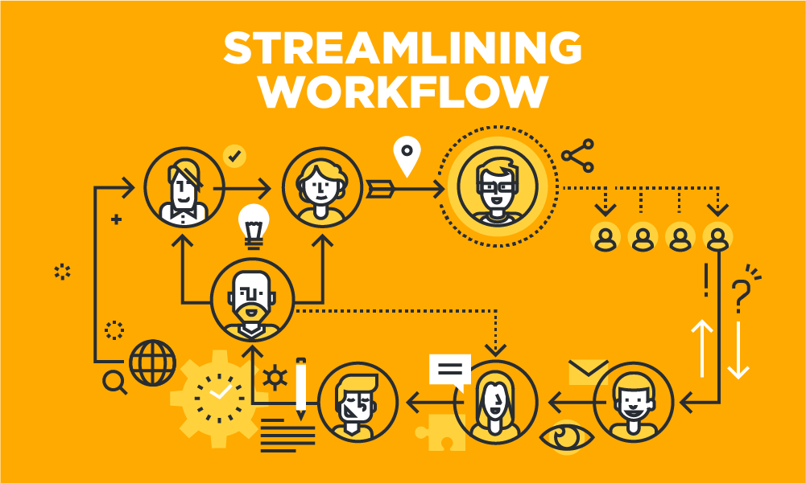
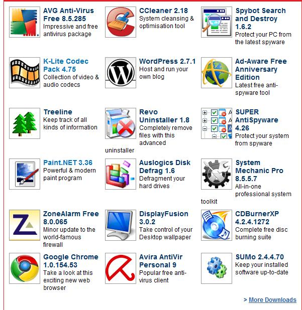
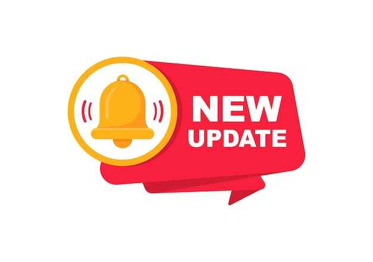
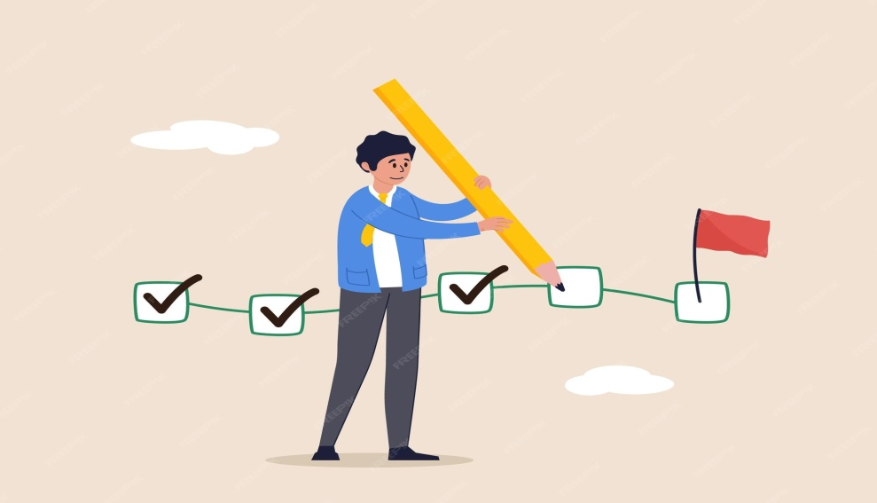
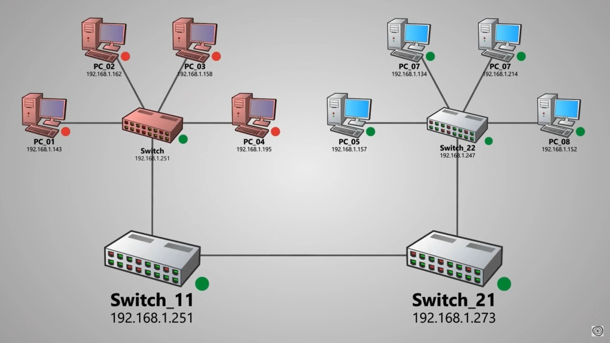

-
1. To provide a centralized platform for managing all IT assets (PCs, printers, switches,
cables, etc.) covered under the AMC.
a. Details like items serial number, make model, warranty , department of control all these
details will be mentioned in one place .
b. Accessing & maintain the items details will easy.
c. Identifying items for BR will become easy
-
2. To streamline the complaint process, allowing users to raise issues online and track
their resolution.
a. The users will be able to register complaints in the items through online.
b. Can able to track the progress of the items
c. Have accountability that what is the status of the item an

-
3. To assign and monitor work of AMC staff, ensuring accountability and transparency.
a. Amc staffs daily complaints attending will be registered
b. Their progress for a complaint will be tracked
c. Specific work can be assigned to a specific person
-
4. To maintain a comprehensive database of all network items for easy screening, auditing,
and lifecycle tracking.
a. Thought digital database screening & managing items will become streamlined
b. Auditing processes for the PC will become more efficient.
-
5. To act as a knowledge-sharing platform, providing IT manuals, guidelines, and updates to
both users and AMC staff.
-
6. To host a repository of drivers and software related to AMC operations for quick and
reliable access.

-
7. To enable real-time updates and notifications about network status, AMC activities, and
technical updates.

-
8. To provide reports and progress tracking for managers, users, and administrators to
ensure SLA compliance and performance monitoring. To improve accountability and efficiency
by capturing daily activities, asset usage, and AMC staff performance.

-
9. Advanced - optional feature To monitor and track network devices (like switches) for
uptime and connectivity, reducing downtime and enabling proactive maintenance.
